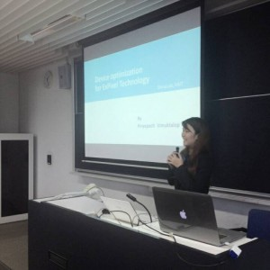

After a presentation planning to finish. This week is the step1 of the project. Step1 is learning about software of the Spyder4. I searched Internet data about using software of the Spyder4. On Tuesday, I and Suzuki help into the program but the program is Japanese language , which I feel very worried because I don’t know the Japanese language that it will result in delayed work. I and Suzuki trying to find information and use the program to change the language. Finally, Suzuki changed the laptop. I am really grateful Suzuki that helping me and giving advice on everything.
When I finished, I have already tried to calibrate the display of laptop for practice using the Spyder4. I tested the display of laptop with brightness. I set brightness at 0% / 25% / 50% / 75% / 100% which brightness difference makes change the color temperature (White Point). Good color temperature is 6500K. So, if you want to image when will use the display for Expixel should adjust the color temperature 6500K.
I started to experiment with the 3D display ” TOSHIBA REGZA”. I set up completely, but the problem is a remote control of the 3D display that its Japanese language. I need to use the remote control to set up brightness, contrast etc. To adjust the display as the standard every machine. if you don’t set them will affect results when calibration completed. It will can’t compare each other.
I tried to use translate but I can’t adjust to them. Next week I will try to resolve the problem and start the step2.
Today is the day of my presentation planning. I am a very excited. It is an important day for me because I have to prepare for the project such as the search for information, read the previous research, go to the museum and consult with professor. I get inspiration and new ideas for research.
Planning is identify the objectives, policies, procedure and program for achieve the set. My project is Device optimization for ExPixel Technology for
Find the relationship between brightness, contrast and color temperature of the display and polarized filter that is different or not?
The color calibrate will make the brightness , contrast and color temperature of display and polarized filter are more similar or not?
For content of the present, I thank Shirai sensei that advised me to put the video of the expixel for everyone to understand and communicate very easily. It’s better than text. When the presentation planning, I feel a slight pressure. Because I was the first to be present but I think it’s a good experience.
After the presentation, I relax and feel relieved very much. And another good things after the presentation, I got the certificate from JST. I am very happy because it is the certificate about I has successfully achieved the course of Japan-Asia Youth Exchange program in Science administered by the JST.
JUNE 5,
In the morning I study about using the program processing with student of KAIT. It is the subject about the programming C language and using the program. It is fun and very interesting. I attended the Japanese students that they study very hard, the class on time and responsibility. I was very impressed and would like to apply to myself.
In the afternoon I went to the lab of Tanaka sensei. It is a lab at about Ubiquitous systems by wireless communication. It is very interesting. There are many new inventions, such as Sign Language ,Electric Wheelchair Automatic, Equipment operation by various interfaces, etc. Everybody to welcome us well. Make me the inspiration for new and more.
Japan is one of my favorite countries. I would like to come here for a long time, but some people often asked me why I want to come to the country on the continent of Asia. Do not underestimate a visit to Japan. When I say this, I am not referring to the usual concerns about dealing with the language barrier, nor the instinctive fear that arises from visiting a completely unknown area. I am talking about what you can experience and the memories you can take away from visiting the country. And when the country you visit is Japan, it can feel otherworldly, but nevertheless I must reiterate that you should not underestimate it.
The first step that I arrived Japan.I feel is cool weather and nature along the way. It’s different from Thailand completely. When I came to KAIT. I am very impressed with the environment within the KAIT. It is a university with many tall buildings, but I don’t feel uncomfortable. I feel calm and comfortable as well. Another thing that impressed me greatly is people within the KAIT including professors and friends to welcome me very well. I do not know how to requite good hope everyone has? But I’ll try to do my best.
On May 24,
I go to Miraikan.it is the National Museum of Emerging Science and Innovation. It is located in Tokyo that Tokyo is a beautiful city. I have a lot of new ideas to the Miraikan. It is important to be inspiring in the development of science. The Miraikan is new science and innovation of Japan. The Miraiakn is a
Geo-Cosmo
place to open a new perspective for me.I have seen a Geo-cosmo. It is a symbol of Miraikan. I can see the weather changing everyday through the LED display on the global. It also provides graphic images such as ocean acidification, temperature change, and various scientific observation data related to Earth. I am very excited.Another technology is Anagura. It is a high technology. When I come into the Anagura. I see something at my feet. It is the science of measuring the behavior of people and objects in the real space that we live in. It is interesting that I never seen before.The Gundam building is one place that I was impressed. DiverCity Tokyo Plaza is a shopping mall and designed to be a new landmark of Tokyo. I have a variety and surprises. It is building a comprehensive and large size the Gundam in front of the building. It is a very beautiful place. In between training trip, I’m excited about the cities of Tokyo. Tokyo has many beautiful buildings and plentifully in natural that Tokyo is a popular tourist destination for foreign tourists. I was impressed about the view on the street. It’s a good memory for me.
On May 26,
It is another day that I have to wake up early but I don’t feel sleepy. Because today I go to JAXA. This place is located in Tsukuba Science City, Ibaraki Prefecture. It is Japan’s national aerospace agency. Japanese astronauts involved in the International Space Station are trained in part here. JAXA is a great chance to go there. Many things make me a surprise and make me know more about astronaut that how can they live and eat. In addition, I am impressed the large rocket that it is located in front of JAXA, called The H-II (H2) rocket. It was a Japanese satellite launch system with five successes. It was developed by NASDA in order to give Japan a capability to launch larger satellites. It was the first two-stage liquid-fuelled rocket Japan made using only technologies developed domestically. It is a very good experience for me.
I go to NHK with Professor and my friends. It’s fun and exciting. NHK has organized Open house 2015 about the ultimate TV.It make me more ideas in research because there are also exhibits a variety of activities such as 8K Super Hi-Vision, 8K Recorder with 120-Hz Frame Rate, High-density Holographic Memory and Integral Three-dimensional Television etc. I’m amazing with the innovation of Japan. I feel like oneself into another world that is the future of the TV screen. Although English language subtitles are less but it is not problem for me because Professor and my friends explain the function of the screen. I enjoy very much. I ride the bus from NHK to Shibuya with Shirai sensei. He is so very nice and take care of me as well. I am very happy. Moreover, I eat Thai food which I didn’t eat for several days. I miss the taste of Thai food. At Shibuya, the taste of Thai food is like living in Thailand. I go to TEPIA. It is a museum of advanced technology. There are many interesting technology and I was born a new idea to do.
{kind=link}
{kind=link}
{kind=link}
{kind=link}
{kind=link}
{kind=link}
{kind=link}
{kind=link}
{kind=link}
{kind=link}
{kind=link}
{kind=link}
{kind=link}
{kind=link}
{kind=link}
{kind=link}
{kind=link}